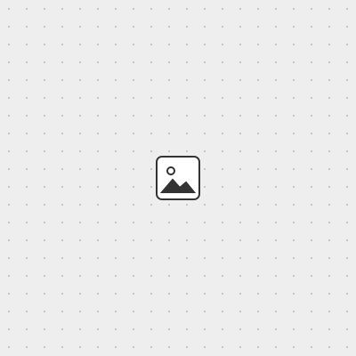

Assignment
What this week asked for, in a sentence or two.
What I made
Describe the outcome. Put the main photo first:

Process
Step one
Walk through what you did. Inline images are fine anywhere:
Step two
Code blocks render too:
print("hello, week 15")
What I learned
Reflections, mistakes, what you'd do differently.
Files
- Design files — CAD, code, exports